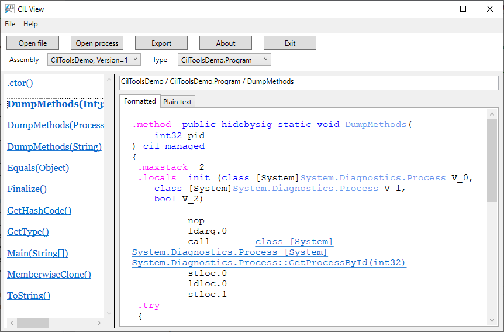
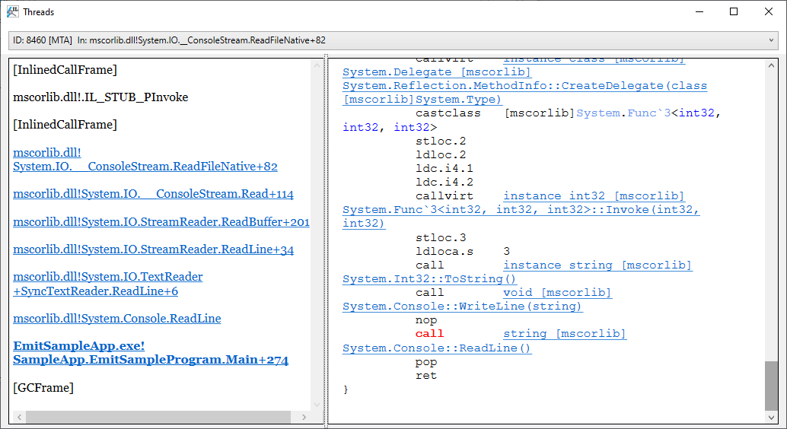

CilView user manual
Requirements: .NET Framework 4.5+
License: BSD 3-Clause
Repository: https://github.com/MSDN-WhiteKnight/CilTools
CilView is a windows application to display CIL code of methods in .NET assemblies. The key features are:
- Displaying CIL code of methods in the specified assembly file or process
- Syntax highlighting
- Navigation to the referenced method's code by clicking on the method reference
- Exporting the method's code into file
- Displaying process information and stack traces of managed threads (when process is opened)
Displaying code from the assembly file
1. Click File -> Open menu or press the Open file button.
2. Select the managed assembly EXE or DLL file in the file open dialog.
3. Select type from the Type drop-down list in the main window
You can also search type by entering the fragment of the type name to Find text field and pressing the ">" button. The search will select the matching type if it's found. Press the button again to go to the next matching type. The program will display message if when the end of list is reached.
4. Select method in the left panel.
5. The right panel will display the CIL disassembly of the selected method.
All method references on the Formatted tab are hyperlinks to the referenced methods. Clicking one them will open the referenced method's code in the right panel, even if the method is from another assembly, as long as that assembly could be loaded.

Displaying code from the process
1. Click File -> Open process menu or press the Open process button.

2. Select the process from the list in the appearing Attach to process dialog.
You can search process by entering the process name starting fragment or ID into the text field and pressing Search.
NOTE: Only 32-bit processes are supported. .NET Core shared host is 64-bit on 64-bit Windows, but you can attach to .NET Core application if it was build targeting the win-x86 runtime ID and started from the resulting EXE file rather than using shared host.
3. Check the active mode checkbox if you want to get more accurate info.
NOTE: When attaching in active mode, the target process is suspended. Do not use active mode on the application that is currently performing critical business tasks.
4. Press OK. The CIL View will scan the target process for loaded assemblies and open them.
5. Select assembly from the Assembly drop-down list in the main window
6. Select type from the Type drop-down list in the main window
7. Select method in the left panel.
You can also search assemblies, types and methods by entering the fragment of their names into the Find text field and pressing the ">" button. CIL View searches methods in the currently selected type, if the type is selected. In a similar way, types are searched in the currently selected assembly, if one is selected. The search results are shown in the context menu. Clicking on the menu item navigates to the corresponding object.
8. The right panel will display the CIL disassembly of the selected method.
You can also view the code of dynamic methods generated at runtime in the target process by selecting the <...DynamicMethods> entry in the assembly drop-down list (it is displayed at the end of the list).
Limitations when displaying code from the process
If the assembly could not be loaded by the CIL View application (this is usually happens with some mixed-mode assemblies which have some PE structures stripped off, so they could be loaded by CLR, but not by System.Reflection.Metadata), the following limitations apply:
- Method return value or parameter types are not shown
- String literal tokens are not resolved
- Standalone signature tokens are not resolved
- Tokens of external assembly members are not resolved
- Local variables and exception handling blocks are not shown
For dynamic methods, the following limitations apply:
- Method signatures are not shown
- All tokens, except for method tokens, are not resolved
- Local variables are not shown
Examining managed threads
To examine managed threads when process is opened, click Process -> Threads menu. The Threads window displays a drop-down list of managed threads. Each list item contains native thread ID, thread type for special threads (GC, Finalizer, Thread pool), COM apartment type (STA or MTA), and the topmost stack frame info. Select thread from the list to view the full stack trace.
The stack trace will be displayed in the left panel. Some stack frames are hyperlinks, and clicking on them will open the corresponding method in the right panel. The instructions belonging to the approximate currently executed code fragment are highlighted in red. This feature only works reliably when attaching in active mode.

ClickOnce installation with auto-update
You can install CIL View via ClickOnce if you want to download updates automatically. The ClickOnce download URL: https://msdn-whiteknight.github.io/CilTools/update/
Using auto-update requires stable internet connection and access to the https://msdn-whiteknight.github.io/ website. If you are using old Windows or .NET Framework versions, you might be unable to connect due to TLS protocol version or ciphersuite mismatch.
Changelog
2.1
- Update assembly reading mechanism to use CilTools.Metadata instead of loading assemblies directly into the current process. This enables inspecting assemblies for another target framework (such as .NET Standard) or when some dependencies could not be resolved. This also means assemblies can be unloaded from memory when they are no longer needed.
- Add support for method implementation flags when outputting method signatures
- Add support for function pointer types
- Add support for module-level ("global") functions and fields
- Add syntax highlighting for calli instruction's operand
- Add full custom modifiers support (they were previously only supported in standalone signatures)
- Add custom modifier syntax highlighting
- Add pinvokeimpl support
- Add exception block support for dynamic methods
- Add method token resolution for dynamic methods
- Support auto-completion in assembly and type combo boxes
- Improve performance for type combo box when assembly has a lot of types
- Rework search. Search results are now displayed in context menu. Method search is added.
- Format char default values as hex
- Improve custom attribute support (now custom attribute data is properly shown for any attribute)
- Improve empty method body handling. Now empty body is ignored only when method is is abstract, P/Invoke or implemented by runtime. In other cases the error message is displayed.
- Place custom attributes before default parameter values in disassembled method code
- Fix ldloc.s/stloc.s instruction handling
- Fix ldtoken instruction handling with field operand
- Fix exception when method implementation is provided by runtime
- Fix possible null reference exception when reading array/pointer of generic args
- Fix BadImageFormatException on C++/CLI assemblies
- Fix signatures with function pointers being incorrectly displayed in left panel
Copyright (c) 2021, MSDN.WhiteKnight
This CIL View distribution contains the binary code of ClrMD library: Copyright (c) .NET Foundation and Contributors, MIT License.